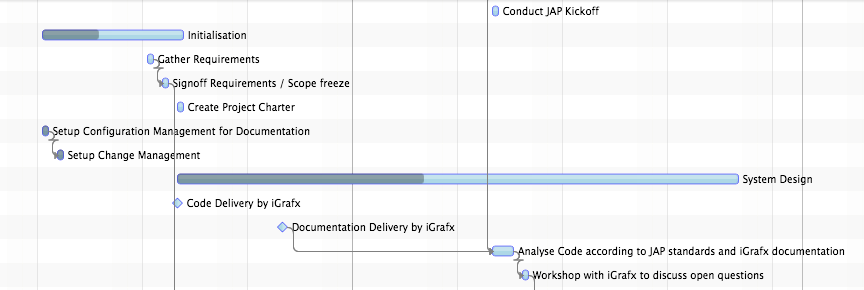
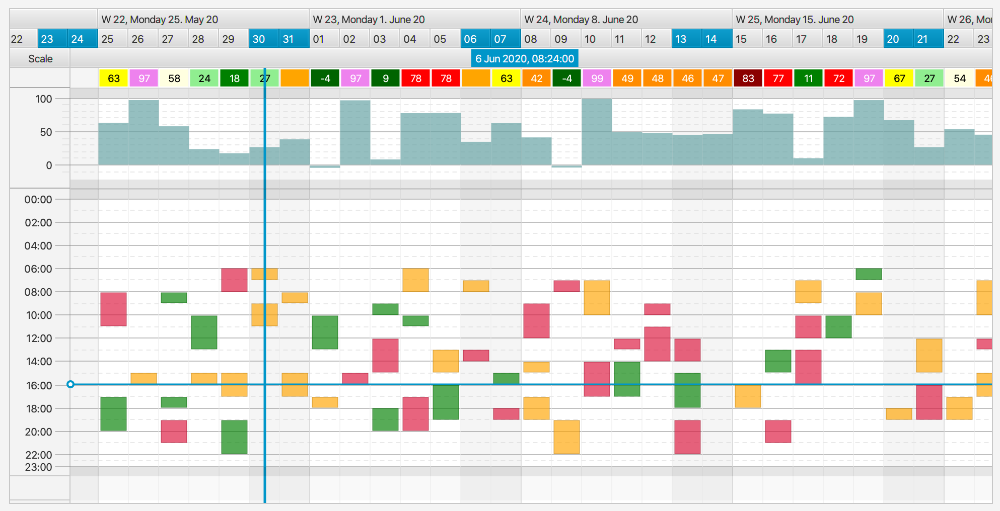

Overview
The graphics view control is responsible for the rendering of activities and system layers, editing of activities, event notifications, hit detection, system layer management, and for context menu support.

Rendering
The graphics control uses the Canvas node and its direct drawing API (as opposed to the deferred rendering done
via the Scenegraph). This is due to the large data volumes often displayed by Gantt charts. Directly rendering an
activity into a bitmap is much faster than updating the scene graph, reapplying CSS styling, laying out nodes. The
graphics control of FlexGanttFX uses a pluggable renderer architecture where renderer instances can be mapped to activity
types, very similar to the way Swing was doing it for list and table cell renderers. The following code is an example
of how to register a custom renderer for a given "Flight" activity and layout type. Please note that the graphics view
is capable of displaying activities in three different layouts, hence the layout type must also be passed to the method.
GanttChart ganttChart = new GanttChart();
GraphicsBase<?> graphics = ganttChart.getGraphics();
graphics.setActivityRenderer(
Flight.class, // the type of activities that will be rendered
GanttLayout.class, // the type of layout where the renderer will be used
new FlightRenderer(graphics)); // the actual renderer instance
System Layers
Activities are not the only thing that needs to be displayed. There are also the current time ("now"), grid lines, inner lines, agenda / chart lines, and so on. All of these things are rendered by so-called system layers. The graphics control manages two lists of these layers. One list for background layers and one list for foreground layers.
Background layers are drawn "behind" activities, foreground layers are drawn "on top of" activities. Each one of these lists is already pre-populated but can be changed by the application. For more information on the available system layers, please refer to their individual documentation.
System layers can be turned on and off directly via the API of the graphics control. There is a boolean property for each
layer. The value of these properties can be set by calling the methods that follow the pattern setShowXYZLayer. System
layers that are controlled like this will appear and disappear with a fade in / fade out animation, while calling
SystemLayer.setVisible(boolean) directly will be without any animation.
Editing
Two different callbacks are used to control the editing behavior of activities. The first maps a mouse event / mouse
location to a GraphicsBase.EditMode and can be registered by calling setEditModeCallback(Class, Class, Callback). The
second callback is used to determine whether a given editing mode / operation can be applied to an activity at all.
This callback is registered by calling setActivityEditingCallback(Class, Callback). Most applications will only need to
work with the second callback and keep the defaults for the edit mode locations (for example, right edge used to change
end time, left edge used to change start time).
Events
Events of the type ActivityEvent are sent whenever the user performs a change inside the graphics view. Applications that
want to receive these events can either call any one of the setOnActivityXYZEvent() methods or by adding an event
handler directly via addEventHandler(ActionEvent.ACTIVITY_XYZ, ...). Events are fired while the change is being
performed and once it has been completed. For this the ActivityEvent class lists event types with the two different
endings CHANGING and CHANGED.
Hit-Point Detection
The graphics view provides support for finding out information about a given position. Activities can be found by
calling getActivityBoundsAt(double, double) or getActivityRefAt(double, double). The time at an x-coordinate can be
looked up by calling getTimeAt(double). The opposite direction is also available: a location can be found for a given
time by calling getLocation(Instant).
Context Menu
Context menus can be set on any control in JavaFX, but due to the complexity of the graphics view, it does make sense
to provide additional built-in support. By calling setContextMenuCallback(Callback) a context menu specific callback can
be registered with the graphics control. This callback will be invoked when the user triggers the context menu. A
callback parameter object (see GraphicsBase.ContextMenuParameter) will be passed to the callback already populated with
the most important values that might be relevant for building a context menu.
System Layers
System layers are used in the background and foreground of each row. A background layer gets drawn before the activities are drawn, while a foreground layer gets drawn after the activities are drawn. Each layer is specialized in drawing one type of information: current time, selected time intervals, grid lines, and so on. The graphics view manages the layers in two lists and provides convenience methods to easily look them up.
- getBackgroundSystemLayers() – returns the complete list of system layers used in the background of activities.
- getForegroundSystemLayers() – returns the complete list of system layers used in the foreground of activities.
- getBackgroundSystemLayer(Class) – returns the system background layer instance of the given type.
- getForegroundSystemLayer(Class) – returns the system foreground layer instance of the given type.
- getSystemLayer(Class) – returns the system layer instance of the given type, no matter if it is a foreground or background layer.
Layers can be added to or removed from the graphics view by adding them to or removing them from the foreground or background list. Once you have looked up a layer, you can set its properties to customize its appearance. The most common properties are used for line colors and widths.
System Layer Example
GraphicsBase<?> graphics = ganttChart.getGraphics();
NowLineLayer nowLayer = graphics.getBackgroundSystemLayer(NowLineLayer .class);
nowLayer.setStroke(Color.ORANGE);
nowLayer.setLineWidth(3); // thick line
System Layers vs. Model Layers
Please note that system layers are not related in any way to model layers. A system layer is basically a renderer for some graphical feedback, while a model layer is used for grouping activities.
Available Background Layers
The following table lists all background layers that are shipping with FlexGanttFX.
| Layer | Description |
|---|---|
| AgendaLinesLayer | Draws the horizontal grid lines for a row if the row or any of its inner lines are using the agenda layout. |
| CalendarLayer | Draws the entries returned by the calendars attached to a row or attached to the entire graphics view. The calendar layer uses pluggable renderers that are mapped to the entry types. Applications can register their own renderers by calling CalendarLayer.setCalendarActivityRenderer(). |
| ChartLinesLayer | Draws the horizontal grid lines for a row if the row or any of its inner lines are using the chart layout. |
| DSTLineLayer | Draws a vertical line at the time when the daylight saving time changes. |
| GridLinesLayer | Draws the vertical grid lines based on the scale resolutions currently present in the dateline. The layer can be configured to display 0 to 3 grid line levels. If the dateline is, for example, showing days and weeks then a level of 2 would cause the layer to draw grid lines for days and weeks, while a grid line level of 1 would only render grid lines for days. |
| HoverTimeIntervalLayer | Draws the hover time interval specified by the dateline. If the mouse cursor hovers over a week in the dateline then the layer will fill the time interval defined by this week with a highlighting color. |
| InnerLinesLayer | Draws separator lines between inner lines. By default the line width property of this layer is set to 0 and the lines will not be drawn at all. To change this simply set a line width greater than 0. |
| NowLineLayer | Draws a vertical line at the location of the current time / now time. The current time is defined in the timeline model. |
| RowLayer | Draws the background of each row. The layer can be configured with pluggable renderers that are mapped to the type of the row. Applications can register their own renderers by calling RowLayer.setRowRenderer(). For more information please read 3.4.7 Row Rendering. |
| SelectedTimeIntervalsLayer | Draws the time intervals that were selected by the user (or the application) in the dateline. |
| ZoomIntervalLayer | Draws the zoom interval as defined by the timeline. The zoom interval gets created by the user via the help of the timeline lasso. |
Available Foreground Layers
The following table lists all foreground layers that are shipping with FlexGanttFX.
| Layer | Description |
|---|---|
| LayoutLayer | Draws the layout padding areas. Each layout may have some padding added to its top and bottom. This layer fills the padding area with a solid color. |
| ScaleLayer | Draws a scale for an entire row or for each line within the row. Scales vary depending on the layout used for the row / line. The scale for the chart layout displays the minimum and maximum values while the scale for the agenda layout displays a time scale (8am, 9am, 10am, .....). The labels and dashes in the scale layer have to align perfectly with the lines drawn by the agenda lines layer and the chart lines layer. |
Drag And Drop
The heavyweight and platform-provided drag and drop (DnD) facilities are used in FlexGanttFX only to move an activity from one row and to another. All other editing operations are handled with standard mouse events (pressed, dragged). The new row might actually be a row in another Gantt chart. The default way to initiate a DnD is to move the mouse cursor into the center of an activity while pressing the SHIFT key. This will change the cursor to the DnD cursor if this kind of editing operation is supported by the targeted activity (see also "Activity Editing"). The DnD will terminate once the user lets go of the mouse button.
Events
Just like all the other editing operations, DnD will also trigger several events during its execution. The following list describes them:
- DRAG_STARTED, DRAG_ONGOING, DRAG_FINISHED - these event types are fired if the editing operation is EditMode.DRAGGING.
- VERTICAL_DRAG_STARTED, VERTICAL_DRAG_ONGOING, VERTICAL_DRAG_FINISHED - these event types are fired if the editing operation is EditMode.DRAGGING_VERTICAL.
The edit mode DRAGGING_HORIZONTAL does not use platform DnD. Hence the event types HORIZONTAL_DRAG_STARTED / ONGOING /
FINISHED are not listed above.
Drag And Drop Info Property
A special property called dragAndDropInfo is available on the graphics view to monitor the DnD operation. This is in
addition to the standard event types mentioned above. The info stored in this property provides the application with
the most important information required about the dragged activity.
| Field | Description |
|---|---|
| row | The row over which the mouse cursor / the dragged activity is currently hovering. |
| activityBounds | The bounds of the dragged activity (contains an activity reference and the actual activity). |
| dragEvent | The last drag event (drag ongoing or drag dropped). |
| dropInterval | The time interval where the activity would be or was actually dropped. |
| offset | The offset where the mouse grabbed the activity (needed for visual feedback of the drag). |
Feedback Types
FlexGanttFX provides different ways of visualizing the DnD feedback. The enumerator DragAndDropFeedback lists the following values which an be set by calling the setDragAndDropFeedback() method on GraphicsBase.
| Value | Description |
|---|---|
| NATIVE | A snapshot image of the activity will be taken and placed below the mouse cursor. The image will be set at the moment the drag gesture gets recognized. Optionally a drag image provider can be used. The size of the image might be different than the size of the activity (platform-specific). |
| RENDERED | The dragged activity will be constantly rendered on a separate canvas on top of the graphics area. The activity is guaranteed to keep its original size. |
| RENDERED_GRID_SNAPPED | The dragged activity will be constantly rendered on a separate canvas on top of the graphics area. The activity is guaranteed to keep its original size. The currently active grid will be used to make the dragged activity snap to the grid locations. |
Drag Image Provider
If the DnD feedback type has been set to NATIVE then it is possible to pass a custom image for the drag operation. This
can be achieved by setting a drag image provider on GraphicsBase by calling setDragImageProvider(). This method
accepts a callback lambda expression. The input for the callback will be an ActivityRef and the output will be an image.
GraphicsBase<?> graphics = ganttChart.getGraphics();
graphics.setDragImageProvider(ref -> createImage(ref));
The default image is a snapshot of the activity at the moment when the drag started.
Drop Layer Provider
Drag and drop operations can be performed between two different Gantt charts, with each chart managing its own list of
layers. By default, a dropped activity will be placed on the same layer as the one where it was dragged from. But if the
target Gantt chart does not contain this layer, then the application needs to be told which layer to use as the new home
for the activity. This can be achieved by setting a "drop layer provider" callback on the target instance of GraphicsBase.
GraphicsBase<?> graphics = targetGanttChart.getGraphics();
targetGraphics.setDropLayerProvider(info -> targetLayer); // info is of type DragAndDropInfo
The default implementation of this callback looks like this:
info -> info.getActivityRef().getLayer(); // use same layer as before
If the drop layer provider returns no layer or if the returned layer is not a layer added to the target Gantt chart / graphics, then we will see messages like this.
- "the drop layer provider has returned no layer for the dropped activity"
- "the drop layer provider has returned a layer that does not exist in the Gantt chart"
Event Handling
The graphics view fires standard JavaFX events to let applications react to change. The concepts used for event handler support in FlexGanttFX are the same as the ones found in the standard JavaFX controls.
Activity Events
Activity events are fired whenever the user deletes or edits an activity. To receive an activity event, register an event handler with the graphics view via one of the convenience methods.
Single Activity Event Handler
GraphicsBase<?> graphics = ganttChart.getGraphics();
graphics.setOnActivityChangeFinished(evt ->
System.out.println("An activity has changed"));
If you need to register more than one handler for a specific event type, then use this approach:
Multiple Activity Event Handlers
GraphicsBase<?> graphics = ganttChart.getGraphics();
graphics.addEventHandler(ActivityEvent.ACTIVITY_CHANGE_FINISHED,
evt -> System.out.println("Listener 1"));
graphics.addEventHandler(ActivityEvent.ACTIVITY_CHANGE_FINISHED,
evt -> System.out.println("Listener 2"));
The following tables list all supported activity event types and the convenience setter methods of the graphics view. The methods are used to quickly register an event handler for the various event types.
| Event Types | Description |
|---|---|
| ACTIVITY_DELETED | Fired whenever the user deletes an activity via the backspace key. |
| ACTIVITY_CHANGE | The parent event type of all activity changes. Can be used to to receive a notification for any kind of activity change. |
| ACTIVITY_CHANGE_STARTED, ACTIVITY_CHANGE_ONGOING, ACTIVITY_CHANGE_FINISHED | Fired whenever an activity change has started, is ongoing, or has finished. |
| CHART_HIGH_VALUE_CHANGE_STARTED, CHART_HIGH_VALUE_CHANGE_ONGOING, CHART_HIGH_VALUE_CHANGE_FINISHED | Fired whenever the user has started editing, is in the process of editing, or has finished editing the "high" value of a high / low chart activity. |
| CHART_LOW_VALUE_CHANGE_STARTED, CHART_LOW_VALUE_CHANGE_ONGOING, CHART_LOW_VALUE_CHANGE_FINISHED | Fired whenever the user has started editing, is in the process of editing, or has finished editing the "low" value of a high / low chart activity. |
| CHART_VALUE_CHANGE_STARTED, CHART_VALUE_CHANGE_ONGOING, CHART_VALUE_CHANGE_FINISHED | Fired whenever the user has started editing, is in the process of editing, or has finished editing a chart value of a chart activity. |
| DRAG_STARTED, DRAG_ONGOING, DRAG_FINISHED | Fired whenever the user has started dragging, is in the process of dragging, or has finished dragging an activity via platform-provided drag & drop. This event type is used when the user can freely move the activity around, vertically and horizontally. |
| END_TIME_CHANGE_STARTED, END_TIME_CHANGE_ONGOING, END_TIME_CHANGE_FINISHED | Fired whenever the user has started changing, is in the process of changing, or has finished changing the end time of an activity. |
| HORIZONTAL_DRAG_STARTED, HORIZONTAL_DRAG_ONGOING, HORIZONTAL_DRAG_FINISHED | Fired whenever the user has started changing, is in the process of changing, or has finished changing the time interval (start and end time) of an activity. Changing this time interval makes the activity move horizontally, either to the right (future) or the left (past). |
| PERCENTAGE_CHANGE_STARTED, PERCENTAGE_CHANGE_ONGOING, PERCENTAGE_CHANGE_FINISHED | Fired whenever the user has started changing, is in the process of changing, or has finished changing the "percentage complete" value of an activity. |
| START_TIME_CHANGE_STARTED, START_TIME_CHANGE_ONGOING, START_TIME_CHANGE_FINISHED | Fired whenever the user has started changing, is in the process of changing, or has finished changing the start time of an activity. |
| VERTICAL_DRAG_STARTED, VERTICAL_DRAG_ONGOING, VERTICAL_DRAG_FINISHED | Fired whenever the user has started dragging, is in the process of dragging, or has finished dragging an activity via platform-provided drag & drop. This event type is used when the user can only drag the activity vertically (reassign an activity to a different row). |
| Event Methods | Description |
|---|---|
| setOnActivityDeleted() | Fired whenever the user deletes an activity via the backspace key. |
| setOnActivityChanged() | The parent event type of all activity changes. Can be used to to receive a notification for any kind of activity change. |
| setOnActivityChangeStarted() setOnActivityChangeOngoing() setOnActivityChangeFinished() | Fired whenever an activity change has started, is ongoing, or has finished. |
| setOnChartHighValueChangeStarted() setOnChartHighValueChangeOngoing() setOnChartHighValueChangeFinished(); | Fired whenever the user has started editing, is in the process of editing, or has finished editing the "high" value of a high / low chart activity. |
| setOnChartLowValueChangeStarted() setOnChartLowValueChangeOngoing() setOnChartLowValueChangeFinished(); | Fired whenever the user has started editing, is in the process of editing, or has finished editing the "low" value of a high / low chart activity. |
| setOnChartValueChangeStarted() setOnChartValueChangeOngoing() setOnChartValueChangeFinished(); | Fired whenever the user has started editing, is in the process of editing, or has finished editing a chart value of a chart activity. |
| setOnActivityDragStarted() setOnActivityDragOngoing() setOnActivityDragFinished(); | Fired whenever the user has started dragging, is in the process of dragging, or has finished dragging an activity via platform-provided drag & drop. This event type is used when the user can freely move the activity around, vertically and horizontally. |
| setOnActivityEndTimeChangeStarted() setOnActivityEndTimeChangeOngoing() setOnActivityEndTimeChangeFinished(); | Fired whenever the user has started changing, is in the process of changing, or has finished changing the end time of an activity. |
| setOnActivityHorizontalDragStarted() setOnActivityHorizontalDragOngoing() setOnActivityHorizontalDragFinished(); | Fired whenever the user has started changing, is in the process of changing, or has finished changing the time interval (start and end time) of an activity. Changing this time interval makes the activity move horizontally, either to the right (future) or the left (past). |
| setOnActivityPercentageChangeStarted() setOnActivityPercentageChangeOngoing() setOnActivityPercentageChangeFinished(); | Fired whenever the user has started changing, is in the process of changing, or has finished changing the "percentage complete" value of an activity. |
| setOnActivityStartTimeChangeStarted() setOnActivityStartTimeChangeOngoing() setOnActivityStartTimeChangeFinished(); | Fired whenever the user has started changing, is in the process of changing, or has finished changing the start time of an activity. |
| setOnActivityVerticalDragStarted() setOnActivityVerticalDragOngoing() setOnActivityVerticalDragFinished(); | Fired whenever the user has started dragging, is in the process of dragging, or has finished dragging an activity via platform-provided drag & drop. This event type is used when the user can only drag the activity vertically (reassign an activity to a different row). |
Activity Events Hierarchy
The event types defined in the ActivityEvent class are defining an event hierarchy. All events are input events (InputEvent.ANY) and they change the activity. Some of them get fired when the user starts the change, some while the change is ongoing, and some when the change is finished.
InputEvent.ANYACTIVITY_CHANGEACTIVITY_DELETEDACTIVITY_CHANGE_STARTED// All event types that signal "start"CHART_VALUE_CHANGE_STARTEDCHART_HIGH_VALUE_CHANGE_STARTEDCHART_LOW_VALUE_CHANGE_STARTED
DRAG_STARTEDEND_TIME_CHANGE_STARTEDHORIZONTAL_DRAG_STARTEDPERCENTAGE_CHANGE_STARTEDSTART_TIME_CHANGE_STARTEDVERTICAL_DRAG_STARTEDACTIVITY_CHANGE_ONGOING// All event types that signal "ongoing"CHART_VALUE_CHANGE_ONGOINGCHART_HIGH_VALUE_CHANGE_ONGOINGCHART_LOW_VALUE_CHANGE_ONGOING
DRAG_ONGOINGEND_TIME_CHANGE_ONGOINGHORIZONTAL_DRAG_ONGOINGPERCENTAGE_CHANGE_ONGOINGSTART_TIME_CHANGE_ONGOINGVERTICAL_DRAG_ONGOINGACTIVITY_CHANGE_FINISHED// All event types that signal "finished"CHART_VALUE_CHANGE_FINISHEDCHART_HIGH_VALUE_CHANGE_FINISHEDCHART_LOW_VALUE_CHANGE_FINISHED
DRAG_FINISHEDEND_TIME_CHANGE_FINISHEDHORIZONTAL_DRAG_FINISHEDPERCENTAGE_CHANGE_FINISHEDSTART_TIME_CHANGE_FINISHEDVERTICAL_DRAG_FINISHED
Activity Event Properties
Applications are obviously interested in the attributes of an activity. Not only the new values of these attributes (for example the new start time) but also the old values (start time before the change). The new values are already available on the activity as they are being set while the user performs the change. The old values are stored on the event object. The following table lists the methods on ActivityEvent to retrieve these values.
| Method | Description | Event Types |
|---|---|---|
getOldTime |
Returns the old start or end time of the activity. | END_TIME_CHANGESTART_TIME_CHANGE |
getOldTimeInterval |
Returns the old start and end time of the activity. | DRAGHORIZONTAL_DRAGVERTICAL_DRAG |
getOldRow |
Returns the old row where the activity was located before. | DRAGVERTICAL_DRAG |
getOldValue |
Returns the old value of "percentage complete" or "chart value". | CHART_VALUE_CHANGECHART_HIGH_VALUECHART_LOW_VALUEPERCENTAGE_CHANGE |
Lasso Events
The user can use a lasso to select activities. Events are fired when this happens. To receive a lasso event simply register an event handler with the graphics view via one of the convenience methods.
Singe Lasso Event Handler
GraphicsBase<?> graphics = ganttChart.getGraphics();
graphics.setOnLassoFinished(evt -> System.out.println("The lasso was used"));
If you need to register more than one handler for a specific event type then use this approach:
Multiple Lasso Event Handlers
GraphicsBase<?> graphics = ganttChart.getGraphics();
graphics.addEventHandler(LassoEvent.SELECTION_FINISHED,
evt -> System.out.println("Listener 1"));
graphics.addEventHandler(LassoEvent.SELECTION_FINISHED,
evt -> System.out.println("Listener 2"));
The following table lists the event types and the convenience setter methods of the graphics view.
| Event Type | Method | Description |
|---|---|---|
ALL |
setOnLassoSelection |
Any lasso operation (start, ongoing, finished). |
SELECTION_STARTED |
setOnLassoSelectionStarted |
The user has pressed the mouse button and started a drag. The lasso has become visible. |
SELECTION_ONGOING |
setOnLassoSelectionOngoing |
The user is changing the size of the lasso. |
SELECTION_FINISHED |
setOnLassoSelectionFinished |
The user has finished the lasso selection. The lasso is no longer visible. |
Lasso Event Hierarchy
The event types defined in the LassoEvent class are defining an event hierarchy. All events are input events (InputEvent.ANY).
* InputEvent.ANY
* LassoEvent.ALL
* LassoEvent.SELECTION_STARTED
* LassoEvent.SELECTION_ONGOING
* LassoEvent.SELECTION_FINISHED
Lasso Info
The lasso automatically performs selections of activities but sometimes we might want to know more about the exact nature of this selection or we want to use the lasso for another use case (e.g. for creating new activities). For this reason instances of LassoEvent also provide an object of type LassoInfo, which carries many attributes that the application can use to react accordingly. The lasso information can be retrieved by calling LassoEvent.getInfo(). The following table lists the attributes of LassoInfo.
| Method | Description |
|---|---|
List<ActivityRef<?>> getActivities |
Returns all activities that were selected by the lasso. |
Instant getStartTime;, Instant getEndTime |
Returns the start and end time of the lasso according to the location of the left and right edge of the lasso. |
LocalTime getLocalStartTime, LocalTime getLocalEndTime |
Returns the local start and end time. These values are only provided if the upper or lower edge of the lasso is located in an area that uses the AgendaLayout. |
List<Row<?,?,?>> getRows |
Returns the rows that were touched by the lasso. |
Links / Further Reading
Oracle JavaFX documentation Event handling examples
Activity Editing
Two different callbacks on the graphics view are used to control the editing behaviour of activities. The first maps a mouse event / mouse location to an editing mode. The second callback is used to determine whether a given editing mode / operation can be applied to an activity at all. Most applications will only need to work with the second callback and keep the defaults for the edit mode locations (for example: right edge used to change end time, left edge used to change start time). The enum GraphicsBase.EditMode lists all available editing operations that can be performed on an activity.
| Mode | Description |
|---|---|
AGENDA_ASSIGNING |
Assign an activity in AgendaLayout to another row. |
AGENDA_DRAGGING |
Drag an activity in AgendaLayout up and down or sideways within the same row. |
AGENDA_END_TIME_CHANGE |
Change the end time of an activity in AgendaLayout. |
AGENDA_START_TIME_CHANGE |
Change the start time of an activity in AgendaLayout. |
CHART_VALUE_CHANGE |
Change the value of a ChartActivity. |
CHART_VALUE_HIGH_CHANGE |
Change the "high" value of a HighLowActivity. |
CHART_VALUE_LOW_CHANGE |
Change the "low" value of a HighLowActivity. |
DRAGGING |
Perform a drag and drop in all directions on an activity. |
DRAGGING_HORIZONTAL |
Move an activity horizontally within its own row (change start and end time). |
DRAGGING_VERTICAL |
Perform a drag and drop on an activity in vertical direction only. |
END_TIME_CHANGE |
Change the end time of an activity. |
NONE |
Do nothing. |
PERCENTAGE_COMPLETE_CHANGE |
Change the "percentage complete" value of a CompletableActivity. |
START_TIME_CHANGE |
Change the start time of an activity. |
Edit Mode Callback
The edit mode callback is used to determine the edit mode at the given mouse location. Instances of this callback can be registered via the GraphicsBase.setEditModeCallback() method which maps the callback to a combination of activity type and layout type.
public final void setEditModeCallback(
Class<? extends MutableActivity> activityType,
Class<? extends Layout> layoutType,
Callback<EditModeCallbackParameter, EditMode> callback);
Edit Mode Callback Parameter
The parameter object passed to the edit mode callback is of type EditModeCallbackParameter and contains the following information:
| Field | Description |
|---|---|
activityBounds |
The bounds of the activity over which the mouse cursor is hovering. The x and y coordinates are relative to the coordinate space of the row where the activity is displayed. |
mouseEvent |
The mouse event that triggered the lookup of the edit mode (normally a MOUSE_OVER). |
Edit Mode Callback Example
The following is a simple example of an editing mode callback.
public class MyEditModeCallback implements Callback<EditModeCallbackParameter, EditMode> {
public EditMode call(EditModeCallbackParameter param) {
MouseEvent event = param.getMouseEvent();
ActivityBounds bounds = param.getActivityBounds();
/*
* If the mouse cursor is touching the left edge of the activity
* then begin a change of the start time of the activity.
*/
if (event.getX() - bounds.getMinX() < 5) {
return EditMode.CHANGE_START_TIME;
}
return EditMode.NONE;
}
This callback can now be registered like this:
GraphicsBase<?> graphics = ganttChart.getGraphics();
graphics.setEditModeCallback(
ActivityBase.class,
GanttLayout.class,
new MyEditModeCallback());
We could have used a lambda expression for the entire callback instance but decided against it in favor of verbosity.
Editing Callback
The editing callback is used to determine if a specific edit mode is currently usable for a given activity. Instances of this callback can be registered via the GraphicsBase.setActivityEditingCallback() method which maps the callback to an activity type.
public final void setActivityEditingCallback(
Class<? extends MutableActivity> activityType,
Callback<EditingCallbackParameter, Boolean> callback);
Editing Callback Parameter
The parameter object passed to the editing callback is of type EditingCallbackParameter and contains the following information:
| Field | Description |
|---|---|
activityRef |
The reference to the activity for which to perform the check. |
editMode |
The edit mode that needs a check. |
Editing Callback Example
The following is a simple example of an editing callback.
public class MyEditingCallback implements Callback<EditingCallbackParameter, Boolean> {
public Boolean call(EditingCallbackParameter param) {
ActivityRef ref = param.getActivityRef();
Activity activity = ref.getActivity();
/*
* Only allow editing for activities that that have not
* started, yet.
*/
if (activity.getStartTime().isAfter(Instant.now())) {
/*
* Only allow changes to the start and end time
* of the activity.
*/
switch (param.getEditMode()) {
case CHANGE_START_TIME:
case CHANGE_END_TIME:
return true;
default:
return false;
}
}
return false;
}
}
This callback can now be registered like this:
GraphicsBase<?> graphics = ganttChart.getGraphics();
graphics.setActivityEditingCallback(
ActivityBase.class,
new MyEditingCallback());
Row Editing
The graphics view not only supports editing activities but also rows. If a row gets edited the entire row will be flipped around and additional controls will become visible on the "back" of the row. If the back of the row requires more space (height) than the front of the row then the height will be automatically adjusted. The following table lists the methods that are related to row editing:
| Method | Description |
|---|---|
void startRowEditing(R row); |
Initiates the row editing sequence on the given row. The back of the row will become visible and expose controls to change row settings. |
void stopRowEditing();void stopRowEditing(R row); |
Stops the row editing of all rows or just the given row. The front of the row will become visible again. |
ObjectProperty<RowEditingMode> rowEditingModeProperty();void setRowEditingMode(RowEditingMode);RowEditingMode getRowEditingMode(); |
Stores, sets, and retrieves the row edit mode. The enum GraphicsBase.RowEditingMode is used to determine whether the user will be able to edit rows at all, one row at a time, or multiple rows at the same time. |
ObservableList<R> getRowsEditing(); |
An observable list of all rows that are currently being edited (their back is shown). |
BooleanProperty animateRowEditor();void setAnimateRowEditor(boolean);<br>boolean isAnimateRowEditor(); |
Stores, sets, and retrieves a flag that is used to signal whether the exposure of the row back will be immediate or animated. |
Row Editor Factory
The row editor factory is used to create the controls for a given row at the moment when the user requests that the row will be edited. The factory is a callback method that gets called with a GraphicsBase.RowEditorParameter object. This parameter object stores some fields that can be useful for creating the editor controls and also a method for stopping the row editing.
| Method | Description |
|---|---|
GraphicsBase getGraphics(); |
Returns a reference to the graphics view where the editing will occure. |
R getRow(); |
Returns the row for which the row editor will be created. |
void stopEditing(); |
A convenience method for the row editor controls that can be used to signal that the user is done editing the row. This method will usually get invoked by some kind of close button in the editor UI. |
A row editor factory might look like this:
public class MyRowEditorFactory implements Callback<RowEditorParameter<R>, Node> {
public Node call(RowEditorParameter<R> param) {
VBox box = new VBox();
/*
* Bind the text property of the textfield to the name
* property of the row. This allows us to change the name
* of the row.
*/
TextField nameField = new TextField();
Bindings.bindBidirectional(param.getRow().nameProperty(),
nameField.textProperty());
/*
* A close button to invoke the stopEditing() method
* on the parameter object.
*/
Button closeButton = new Button("Close");
closeButton.setOnAction(evt -> param.stopEditing());
box.getChildren().addAll(nameField, closeButton);
/*
* Return the vbox node.
*/
return box;
}
}
Row editors can be registered like this:
GraphicsBase<?> graphics = ganttChart.getGraphics();
graphics.setRowEditorFactory(new MyRowEditorFactory());
Row Controls Factory
To trigger row editing the user interface needs to provide some kind of controls. This can be done in many ways, for example by the help of a context menu on a row. Another way is to use the built-in support for so-called "row controls". These controls appear / disappear every time the mouse cursor enters / exists a row. They are created by a callback implementation. This callback receives a parameter object of type GraphicsBase.RowControlsParameter. The following table lists the fields of this type.
| Field | Description |
|---|---|
graphics |
The graphics view for which the callback gets invoked. |
row |
The row for which controls will be created. |
Example 1
A possible implementation of this callback can look like this:
public class MyRowControlsFactory extends StackPane
implements Callback<RowControlsParameter, Node> {
private Button button;
public MyRowControlsFactory() {
/*
* Important: let mouse events pass through.
*/
setMouseTransparent(true);
button = new Button("Press Me");
getChildren().add(button);
}
/*
* Reuse the button. Simply exchange the action that will
* happen when the user presses on it.
*/
public Node call(RowControlsParameter param) {
button.setOnAction(evt ->
System.out.println("Pressed on row " +
param.getRow().getName());
return this;
}
Please take notice that this factory is a Node object and returns itself every time the call() method gets invoked. Only the action of the button gets replaced with each inocation. This makes perfect sense as row controls are always only shown for one row at a time (as opposed to row editors where several of them can be in use at the same time).
The callback can be registered like this:
GraphicsBase<?> graphics = ganttChart.getGraphics();
graphics.setRowControlsFactory(new MyRowControlsFactory());
Example 2
The following is the code of the RowControls class in the FlexGanttFX "Extras" project. It adds a simple "Edit" button to the row. When clicked it will show the row editor controls on the back on the row.
package com.flexganttfx.extras;
import javafx.geometry.Pos;
import javafx.scene.Node;
import javafx.scene.control.Button;
import javafx.scene.layout.HBox;
import javafx.util.Callback;
import com.flexganttfx.model.Row;
import com.flexganttfx.view.graphics.GraphicsBase.RowControlsParameter;
public class RowControls<R extends Row<?, ?, ?>> extends HBox implements
Callback<RowControlsParameter<R>, Node> {
private Button editButton;
public RowControls() {
setPickOnBounds(false);
setMinSize(0, 0);
setAlignment(Pos.TOP_RIGHT);
setFillHeight(true);
editButton = new Button("EDIT");
editButton.getStyleClass().add("row-controls-button");
getChildren().add(editButton);
}
@Override
public Node call(RowControlsParameter<R> param) {
editButton.setOnAction(evt -> param.getGraphics().startRowEditing(
param.getRow()));
return this;
}
}
The matching CSS for the button is defined like this:
/*
* Row controls button are shown when the mouse hovers over a row that can be
* edited (flipped around).
*/
.row-controls-button {
-fx-padding: 5 9 7 7;
-fx-background-insets: 0 4 2 2;
-fx-background-color: rgba(0,0,0,.5);
-fx-background-radius: 0;
-fx-text-fill: white;
-fx-font-size: 8;
-fx-font-weight: bold;
}
.row-controls-button:hover,
.row-controls-button:focused {
-fx-padding: 5 9 7 7;
-fx-background-insets: 0 4 2 2;
-fx-background-color: rgba(0,0,0,.6);
-fx-background-radius: 0;
-fx-text-fill: white;
-fx-font-size: 8;
-fx-font-weight: bold;
}
.row-controls-button:pressed,
.row-controls-button:selected {
-fx-background-color: rgba(0,0,0,.7);
-fx-background-radius: 0;
}
Activity Rendering
The graphics view uses the canvas API of JavaFX. This is due to the complex nature of a Gantt chart and due to the large data volumes often observed inside of them. Directly rendering large quantities of activities into a bitmap is much faster than constantly updating the scene graph and reapplying CSS styling. FlexGanttFX implements a pluggable renderer architecture where renderer instances can be mapped to activity types, very similar to the way Swing was doing it.
The following code is an example of how to register a custom renderer for a given "Flight" activity type. Please note that the graphics view is capable of displaying activities in different layouts, hence the layout type must also be passed to the method.
GraphicsBase<?> graphics = ganttChart.getGraphics();
graphics.setActivityRenderer(
Flight.class,
GanttLayout.class,
new FlightRenderer(graphics));
We usually also pass the graphics view to the renderer at construction time. This is needed as renderers will invoke a redraw on the graphics when any of its properties changes. This is very different to the Swing approach. This also implies that renderer instances should only be used for a single graphics view, the one that was passed to their constructor.
The following methods on GraphicsBase are used for working with renderers:
| Method | Description |
|---|---|
| void setActivityRenderer(...); | Registers a new renderer for the given activity and layout type. |
| ActivityRenderer getActivityRenderer(...); | Returns a renderer for the given activity and layout type. |
Drawing
Activity renderers have a single entry point for drawing, a method called draw(). This method is final and can not be overriden. Once invoked it will call various protected methods to perform the actual drawing. The call hierarchy looks like this:
- public final draw() .... calls ...
- protected ActivityBounds drawActivity()
- protected void drawBackground()
- protected void drawBorder()
Subclasses are free to override any of the three protected methods to customize the activity appearance.
All drawXXX() methods have the same arguments:
ActivityRef<A> activityRef, // the activity to draw
Position position, // agenda layout only (first, middle, last, only)
GraphicsContext gc, // the graphics context into which to draw
double x, // the location of the start time of the activity
double y, // the y coordinate (0 when drawn on row or line location)
double w, // end time location minus start time location
double h, // row or line height
boolean selected, // is activity currently selected?
boolean hover, // is mouse cursor currently hovering over it?
boolean highlighted, // is activity currently blinking?
boolean pressed) // is user currently pressing on it?
Default Renderers
The following table lists the various activity renderers that are provided by default.
| Renderer Class | Description |
|---|---|
| ActivityRenderer | The most basic renderer for activities. Draws a filled rectangle at the location of the activity. All default renderers are subclasses of this type. |
| ActivityBarRenderer | Draws a bar instead of filling the entire area. The height of the bar can be specified. Also supports text in several locations inside and outside the bar. |
| ChartActivityRenderer | Draws a ChartActivity vertically depending on its chart value. |
| CompletableActivityRenderer | Subclass of the bar renderer. Draws a CompletableActivity as a bar with a section of its background filled with another color. The size of the section depends on the percentage complete value of the activity. |
Activity Bounds
Every activity renderer is responsible for returning an instance of ActivityBounds after drawing the activity. These bounds are an essential piece for the framework and many operations will only work properly if these bounds are valid. They are being used for editing activities, for hit-point detection, for laying out links, for context menus, and so on. The following table lists the attributes of the ActivityBounds class.
| Attribute | Description |
|---|---|
| activity | The activity for which these are the bounds. |
| activityRef | An activity reference pointing to the activity. |
| layer | The layer on which the activity was drawn. |
| layout | The layout that was used when the activity was drawn. |
| lineIndex | The index of the line on which the activity is located (-1 if activity is on the row, not a line). |
| position | The position of the bounds when the activity was drawn in agenda layout (first, middle, layout). This is needed becaue the same activity might be rendered in several pieces across several days. |
| row | The row where the activity was drawn. |
Please ignore the attributes overlapColumn, overlapCount, and the list overlapBounds. These are all used internally for agenda layout related operations.
Properties
All renderers define several properties that can be used to customize their apperance. Many of these properties are dependent on the "pseudo state" of the activity: hover, pressed, selected, highlighted. To make it easier to lookup the right color at the right time several convenience methods are available:
Renderer: protected Paint getFill(boolean selected, boolean hover, boolean highlighted, boolean pressed);- Returns the color to use for the activity background depending on pseudo states passed.
ActivityRenderer: protected Paint getStroke(boolean selected, boolean hover, boolean highlighted, boolean pressed);- Returns the color to use for the activity border depending on pseudo states passed.
ActivityBarRenderer: protected Paint getTextFill(boolean selected, boolean hover, boolean highlighted, boolean pressed);- Returns the color to use for text depending on pseudo states passed.
Row Rendering
The system layer RowLayer supports pluggable renderers to customize the background of each row depending on the row type. In the tutorial we have seen that we can have Aircraft rows and Crew rows. For clarity these two rows could have different background colors. This is something that could be done with a row renderer.
Row Renderer
All row renderers have to subclass RowRenderer. This class defines a final public method called draw() that gets called by the framework. It then calls the protected method drawRow() which subclasses can override. A possible implementation might look like this:
public class AircraftRowRenderer extends RowRenderer<Aircraft> {
public AircraftRowRenderer(GraphicsBase<?> graphics) {
super(graphics, "Aircraft Row Renderer");
}
protected void drawRow(Aircraft row,
GraphicsContext gc,
double w,
double h,
boolean selected,
boolean hover,
boolean highlighted,
boolean pressed) {
gc.setFill(Color.ORANGE);
gc.fillRect(0, 0, w, h);
}
}
This renderer can now be registered with the RowLayer like this:
GraphicsBase<?> graphics = ganttChart.getGraphics();
graphics.getSystemLayer(RowLayer.class).setRowRenderer(
Aircraft.class, new AircraftRowRenderer());
Context Menu
There are two ways to register a context menu with the graphics view. The standard way by calling GraphicsBase.setContextMenu(ContextMenu) or by registering a context menu callback by calling GraphicsBase.setContextMenuCallback(). The advantage of the second option is that a parameter object of type ContextMenuParameter will be passed to the callback method. This parameter object contains the most relevant parameters that most context menus will require to let the user perform some kind of action on the graphics view.
Please note that a context menu callback will have precedence over a standard context menu.
Code Example
The following snippet shows an example of a context menu callback implementation. Here we simply add a menu item for each activity that was found at the mouse location where the context menu was requested by the user.
GraphicsBase<?> graphics = ganttChart.getGraphics();
graphics.setContextMenuCallback(param -> {
ContextMenu menu = new ContextMenu();
for (ActivityRef<?> ref : param.getActivities()) {
Activity activiy = ref.getActivity();
MenuItem item = new MenuItem("Move " + activity.getName());
item.setOnAction(evt -> moveActivity(activity);
menu.getItems().add(item);
}
return menu;
});
Row Headers
Each row in the graphics area can display its own header, which will be displayed on the left-hand side of the row. The header always stays in this place and does not scroll when the visible time range changes (e.g. when the user scrolls left or right).

The default row header that ships with FlexGanttFX knows how to display scales when the application uses chart or agenda layouts. The implementation of the default header can be found in the ScaleRowHeader class.
Custom row headers can be created by subclassing GraphicsBase.RowHeader. The item property will be updated whenever the row changes for which the header is used. Just like list or table cells the row header class is an extension of Label, which means that you can completely replace its content by calling setGraphics(Node node) and setContentDisplay(ContentDisplay.GRAPHICS_ONLY).
See also:
public void setRowHeaderFactory(Callback<GraphicsBase<R>, RowHeader<R>> factory);
public void setShowRowHeaders(boolean showRowHeaders);
Note: in older versions of FlexGanttFX the functionality for displaying a row header / scales was found inside the ScaleLayer class. With the introduction of the canvas buffer concept and scrolling via the translateX property it became necessary to change this because the scales were placed in all kinds of places, depending on the translateX property value.